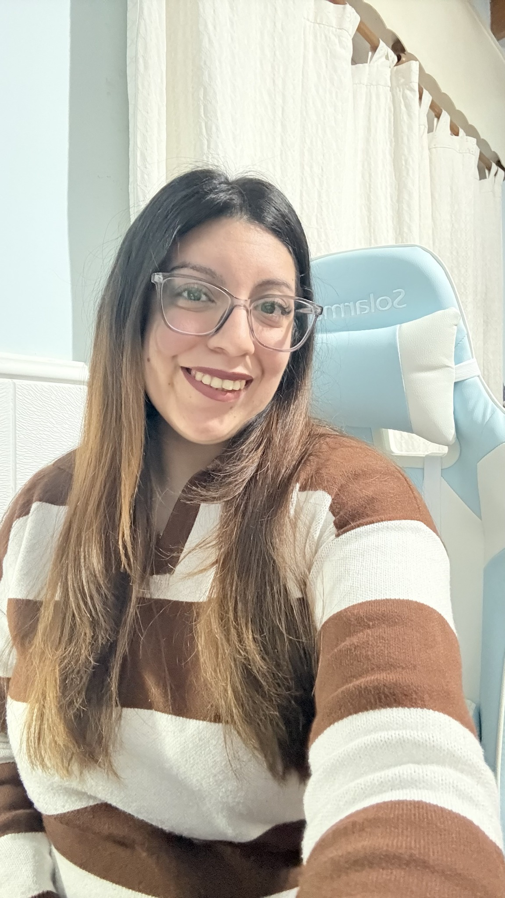

Comprender
Reconocé lo que ya sabés y los recursos con los que contás.
ENGLISH · COMMUNICATION · PRACTICE
Espacios para mantener tu inglés activo, desarrollar tu comunicación y seguir descubriendo todo lo que podés hacer con el idioma.
Encontrá tu espacio ↘Comprender. Organizar. Expresar.
Y seguir desarrollando tu inglés.
Tenés conocimientos, ideas y experiencias con el idioma. Pero, a veces, llevar todo eso a una conversación puede ser un desafío.
Querés decir algo, pero te cuesta organizar la idea.
Entendés inglés y querés desarrollar tu capacidad de expresarte.
Buscás más oportunidades para practicar, probar recursos y ganar confianza.
No se trata de volver a empezar. Se trata de poner en acción lo que ya sabés y seguir desarrollándolo.

Profesora de inglés y creadora de UMER ENGLISH.
Creo en un inglés que se usa, se explora y se mantiene vivo.
Después de años enseñando, empecé a observar algo que se repetía: muchas personas tenían conocimientos de inglés, pero necesitaban más oportunidades para ponerlos en práctica y desarrollar su comunicación.
Una experiencia personal durante un viaje también me hizo mirar el idioma desde otra perspectiva. Me encontré en una situación inesperada, con nervios e incertidumbre, y tuve que recurrir a mis conocimientos para desenvolverme.
Esa experiencia reforzó una idea que hoy forma parte de UMER: comunicarse también implica poner en práctica lo que sabemos, desarrollar recursos y aprender a desenvolvernos en distintas situaciones.
Hoy creo espacios para experimentar con el inglés, entrenar la comunicación y mantener el idioma activo.
UMER reúne cuatro principios que guían las experiencias: comprender lo que ya sabés, organizar tus ideas, expresarte y seguir desarrollando tu comunicación.
Reconocé lo que ya sabés y los recursos con los que contás.
Encontrá maneras de ordenar tus ideas y preparar lo que querés comunicar.
Poné tus ideas en palabras, compartilas y participá en distintas situaciones.
Probá, observá qué funciona y ajustá tus recursos para continuar creciendo.
Elegí la forma de practicar que mejor acompaña tus intereses y el momento en el que estás.
SPEAKING EN GRUPO REDUCIDO
Un espacio para mantener tu inglés activo y desarrollar tu forma de comunicarte a través de distintas estrategias de comunicación. Practicá, experimentá y descubrí nuevas maneras de expresar tus ideas e interactuar con otras personas.
EXPERIENCIA PERSONALIZADA
Actividades diseñadas en torno a tus intereses para explorar nuevos temas, preparar tus ideas y llevar lo que descubrís a la conversación. Una experiencia individual para mantener tu inglés activo y seguir desarrollando tu comunicación.
¿No sabés cuál elegir? Escribime y vemos qué experiencia puede acompañarte mejor.
A veces, seguir desarrollando el inglés no significa estudiar más, sino observar cómo lo usamos y qué podemos hacer con lo que ya sabemos.
Esta checklist te invita a reflexionar sobre tu forma de comunicarte, reconocer qué recursos ya ponés en práctica e identificar qué te gustaría seguir desarrollando.
No es un examen de nivel. Es un punto de partida para explorar tu inglés desde otra perspectiva.
Descargar la checklist ↓Contame qué estás buscando y vemos qué experiencia puede acompañarte para mantener tu inglés activo y desarrollar tu comunicación.
El número de WhatsApp es de prueba: reemplazalo en script.js antes de publicar.